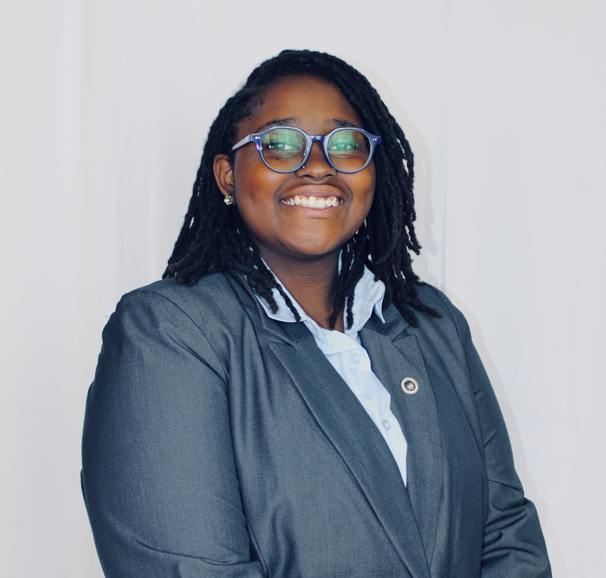
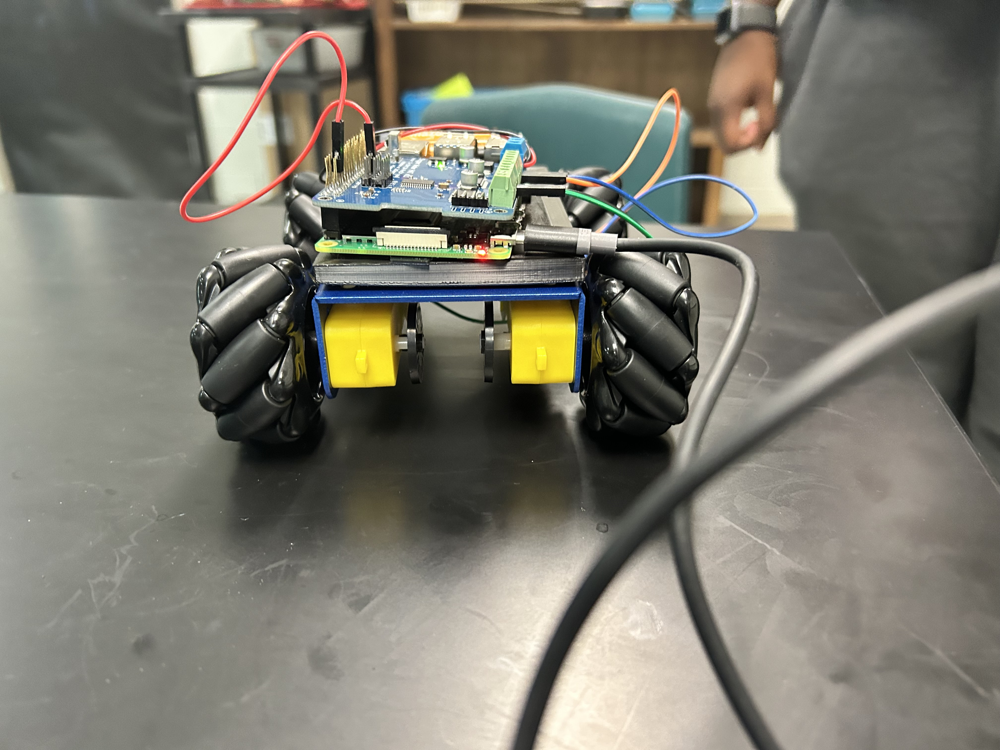
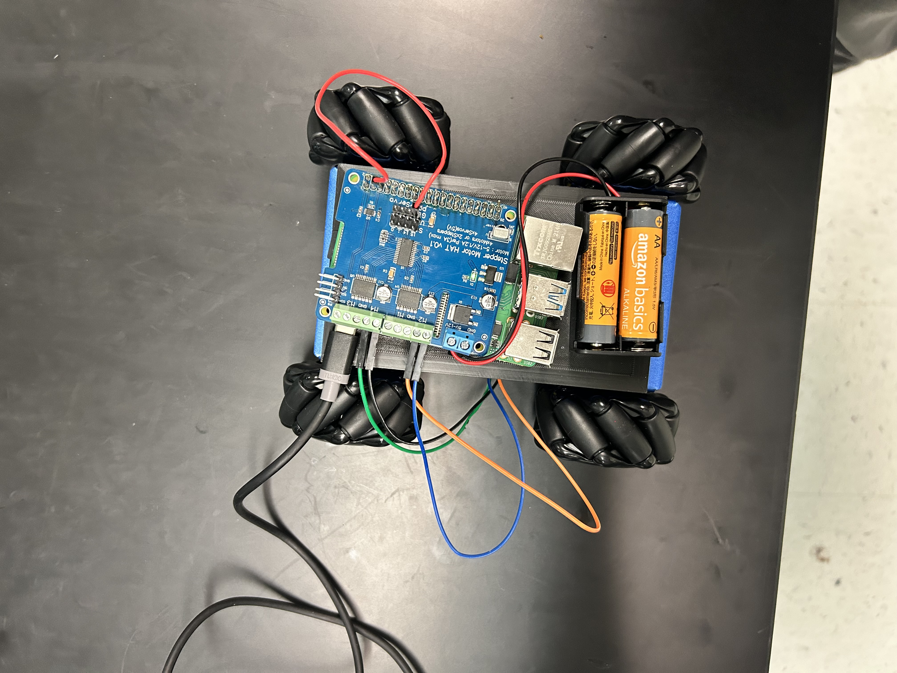
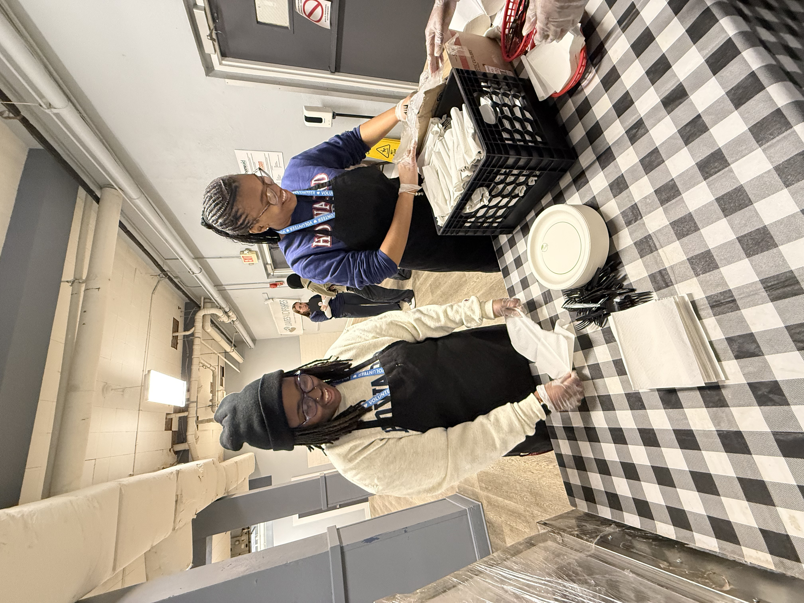

Electrical Engineering Student | Lighting Tech | Aspiring Innovator
I'm a passionate engineering student with experience in robotics, lighting design, and community outreach. My goal is to blend creativity and technical skills to drive innovation in the energy and entertainment industries.
Collaborated on a space-ready engineering solution through the NASA HUNCH program. Designed, tested, and presented a viable prototype for astronaut use.
Developed a smart lighting system for theaters using Arduino and C++. Focused on efficiency, timing, and wireless control.
My senior project was a robot controlled by hand gestures, built using a Raspberry Pi and 3D printed components. Built a compact, multi-directional robot powered by Raspberry Pi and motor driver circuitry. The bot uses omni-wheels for advanced mobility, and the electrical layout supports precise control through programming logic. This project deepened my understanding of real-world robotic applications and embedded systems.
 I believe in giving back to the community through hands-on service. Whether it’s preparing meals at a local shelter or mentoring younger students, I take pride in being a part of change. Community service teaches compassion, and I bring that same heart into everything I do.
As an aspiring electrical engineer, I'm driven by a curiosity for how things work and how they can be made better. My interests span robotics, renewable energy, and smart systems. I'm especially passionate about integrating innovation with purpose — whether it's designing sustainable systems or creating facial recognition spotlights for live events.
You can view or download my full resume by clicking the link below:
📄 View My Resume (PDF)Email: Allowynemadison23@gmail.com